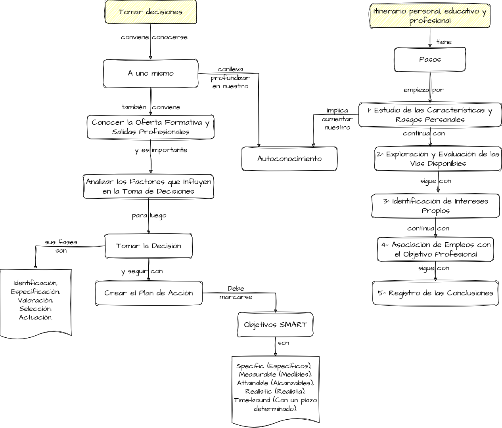

Mapa conceptual
En el siguiente mapa conceptual puedes ver donde encaja lo que hemos aprendido dentro de "nuestros conocimientos previos":

Te reto a que ahora lo copies en el cuaderno, y lo amplíes con más contenido que hayas aprendido al respecto.